Calibre Bench help
Back to the appTime and the going train
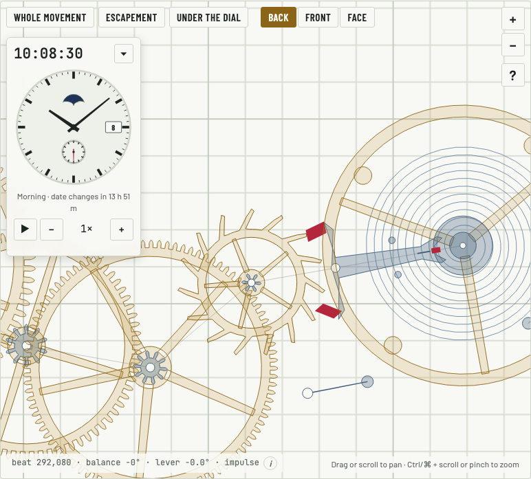
- Hands read the time
- Seen from the front, the hands turn clockwise and each wheel turns against its neighbor
- Center wheel turns once an hour, fourth wheel once a minute
- Changing the beat rate alone makes the watch run slow or fast
- Amplitude changes the swing, not the rate
- A wrong tooth count shows a rate error
Every dial
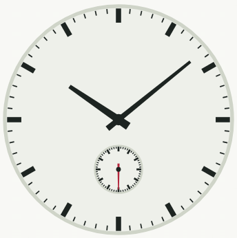
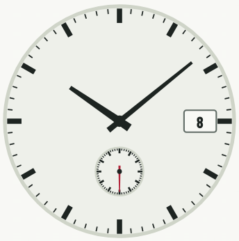
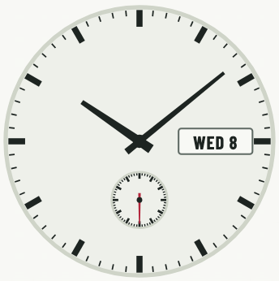
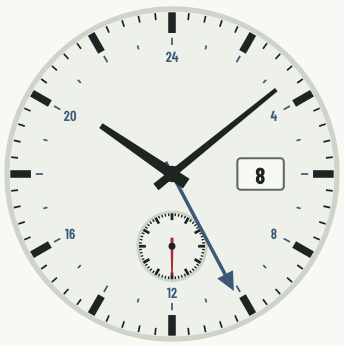
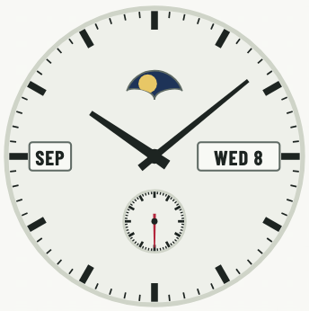
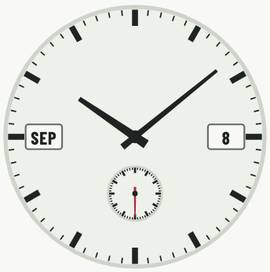
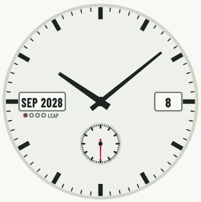
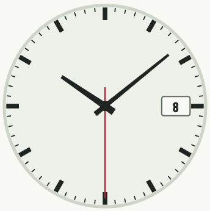
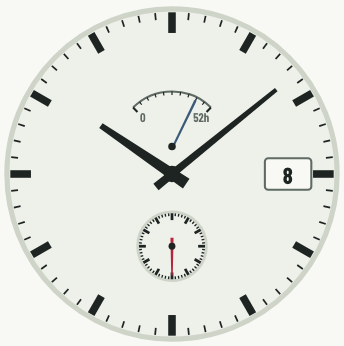
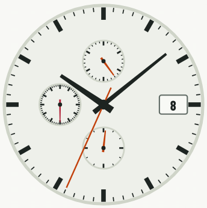
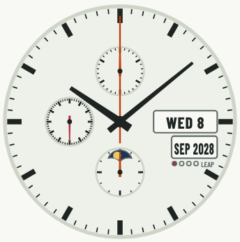
- Nothing on the dial collides, on any combination
- Window text stays inside its window
- Set to now keeps every option
Back, Front, Face


- From the back, printing is mirrored and faded
- From the front, printing reads normally
- Face lays the dial over the movement and taps go through
- Zoom buttons and presets frame the drawing
- A pinch on a panel zooms the drawing and presses nothing
Crown
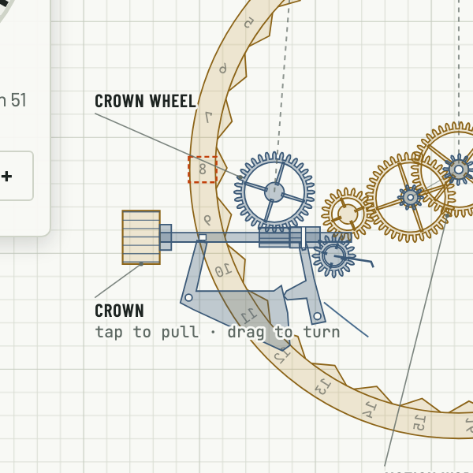
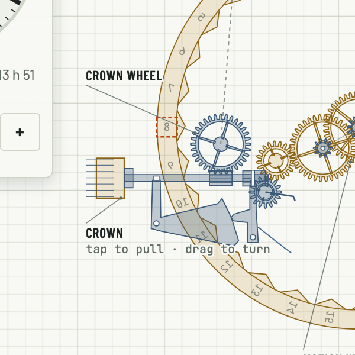
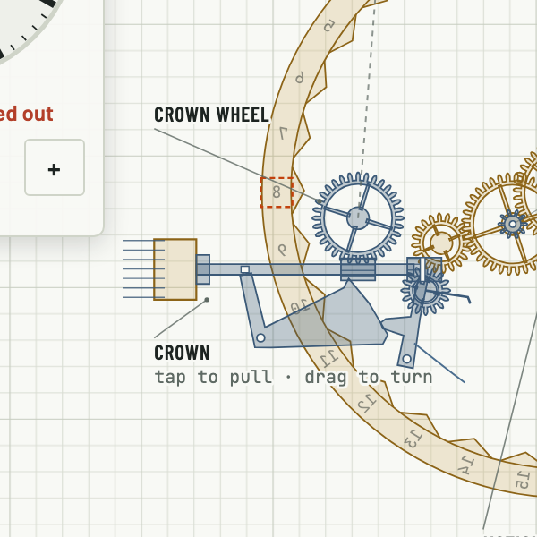
- Crown in winds forward and slips back
- Winding stops at full
- Crown out moves the hands five minutes a tap
- Setting past midnight moves the date forward only
- First click sets the right thing on each watch
- Quick-setting near midnight warns
- Time only has no first click
- Pulling the crown out stops the watch
Power


- A full wind runs 52 hours
- Low reserve turns the bar red
- Running down shows a Wind button
Date


- Next date comes up from below
- Date ring shows through the date window
- Date changes at midnight
- A simple date needs correcting after a 30-day month
Retrograde date
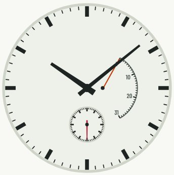
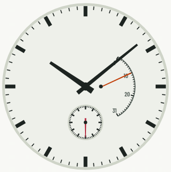
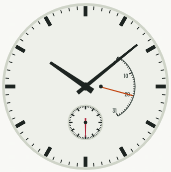
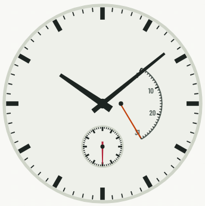
- Retrograde hand climbs the scale, then flies back after the last day
Day and month
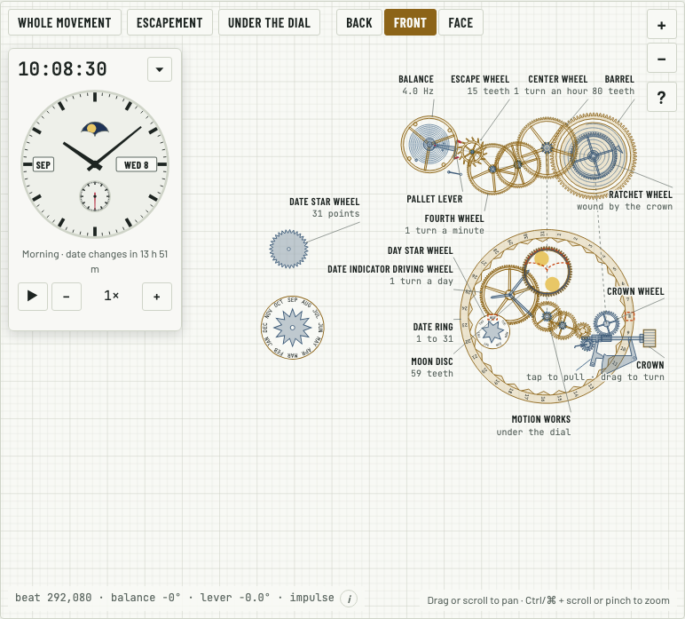
- Day changes at midnight
- Day disc prints the dial day at its window
- Day corrector only where the crown has no room for it
- Day star clears the moon wheel
- Month disc prints the dial month at the top
Moon phase


- New moon is hidden
- Full moon shows whole
- Moon appears and disappears on its right side first
- Moon wheel sits behind the aperture
- Match the real moon lands within half a day
- Crown back moves the moon one day
GMT
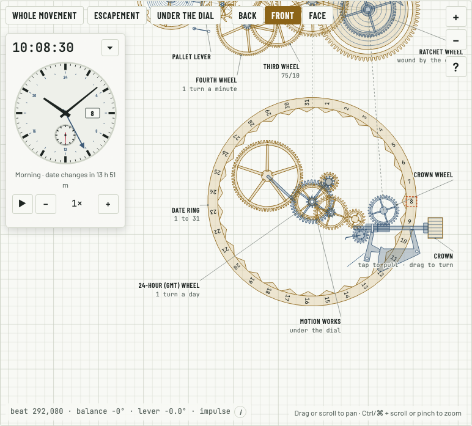
- GMT hand turns once in 24 hours and shows home time
- GMT quick-set moves one hour and leaves the hands alone
- GMT wheel turns with the hour wheel at half speed
Annual and perpetual calendars
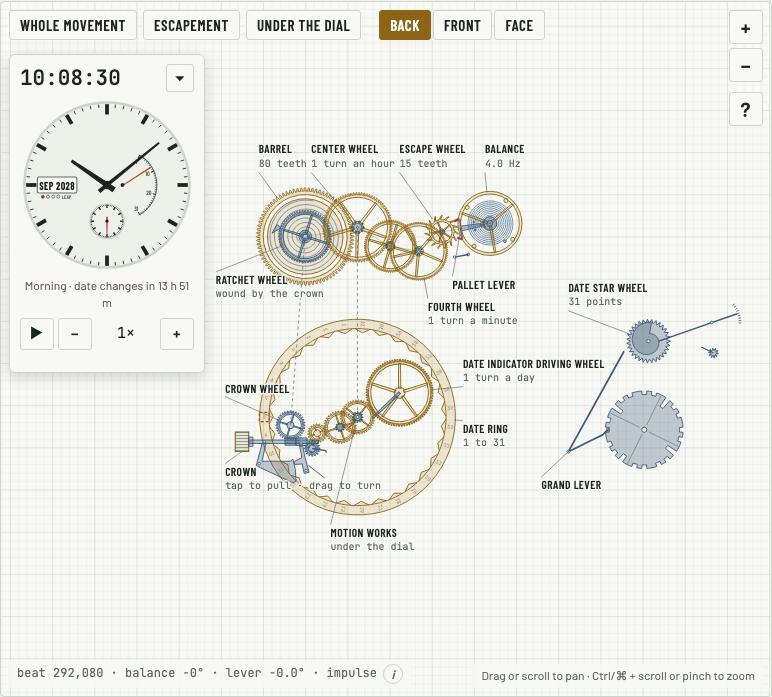
- Annual calendar knows 30-day months but not February
- Perpetual calendar knows leap years, up to 2100
- Leap dots show the year in the cycle and stay on the dial
- Correctors come with a month cam
Central seconds
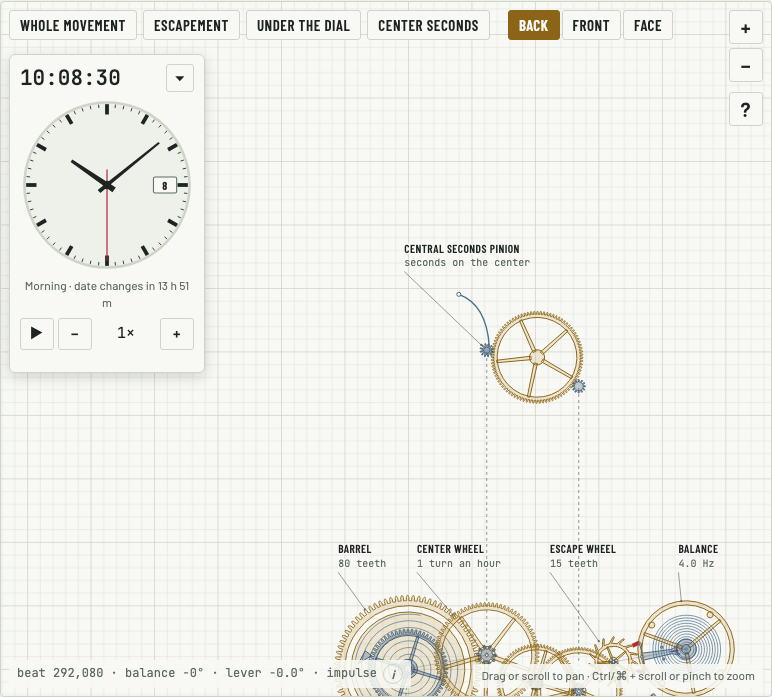
- Central seconds replaces the small seconds
Chronograph
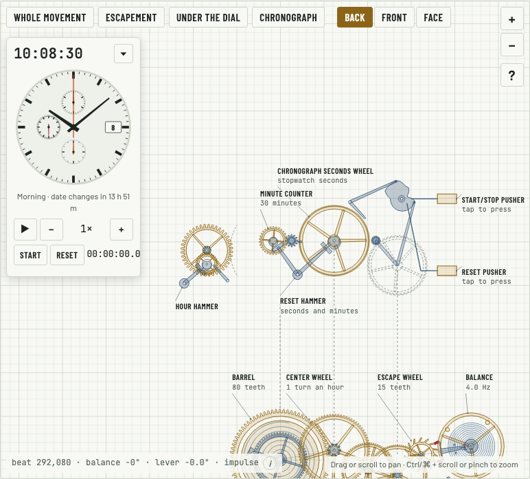
- Stopwatch starts, stops and resets
- Standard chronograph ignores reset while running
- Flyback restarts from zero in one press
- Counters read 30 minutes and 12 hours
- Minute counter hand turns with its gear
- Running seconds keep going while the stopwatch is stopped
- Chronograph rules out date and moon, retrograde, central seconds and the reserve hand
Automatic winding
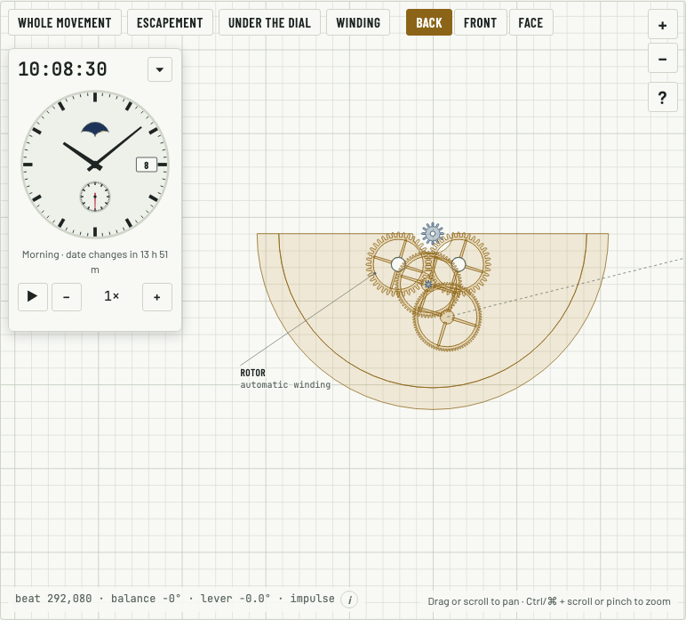
- Rotor winds on both swings
- Walking fills the spring and a desk day barely slows the loss
- Automatic slips at full
- Wrist choices come with automatic
- Rotor hangs where its label points
Power reserve hand
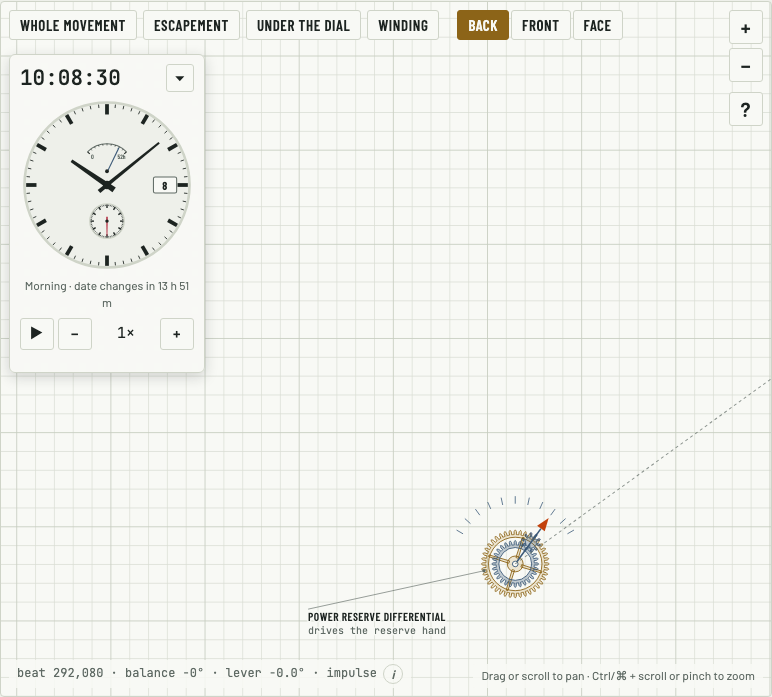
- Reserve hand follows the spring
Explaining the parts
- Every label points at its part
- No label hides under the floating panel
- The tour visits every part on this watch
- Explain mode opens a card for a part